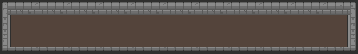
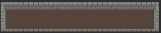

<div class="partida_container">

  <!--game-->
  <div class="partida_container__game">
    <canvas #myCanvas height="480" width="640"></canvas>
  </div>

  <div class="partida_container__start__reset">
    <button class="partida_container__start__reset__button" (click)="resetOptionsSelect()">
      
    </button>
    <button class="partida_container__start__reset__button" (click)="startAnimations()" >
      
    </button>
  </div>

  <!--  controler -->
  <div class="partida_container__controls">
    <div cdkDropListGroup class="drag_container_options">
      <!--  opções de seleção-->
      <div cdkDropList [cdkDropListData]="options" class="drag_container_options__start"
           cdkDropListOrientation="horizontal">
        
      </div>
      <!--  campo para destino de opçõs de função -->
      <div cdkDropList [cdkDropListData]="selected_normal" cdkDropListOrientation="horizontal"
           class="drag_container_options__destine"
           (cdkDropListDropped)="dropOptionElementNormal($event)">
        
      </div>
      <!--   fundo de opção selecinadas-->
      

      <!--  icone de opçao de função-->
      <div cdkDropList [cdkDropListData]="option_function" class="drag_container_options__function"
           cdkDropListOrientation="horizontal">
        
      </div>
      <div cdkDropList [cdkDropListData]="selected_function" cdkDropListOrientation="horizontal"
           class="drag_container_options__destine__function"
           (cdkDropListDropped)="dropOptionElementFunction($event)">
        
      </div>
      
    </div>
  </div>
</div>


